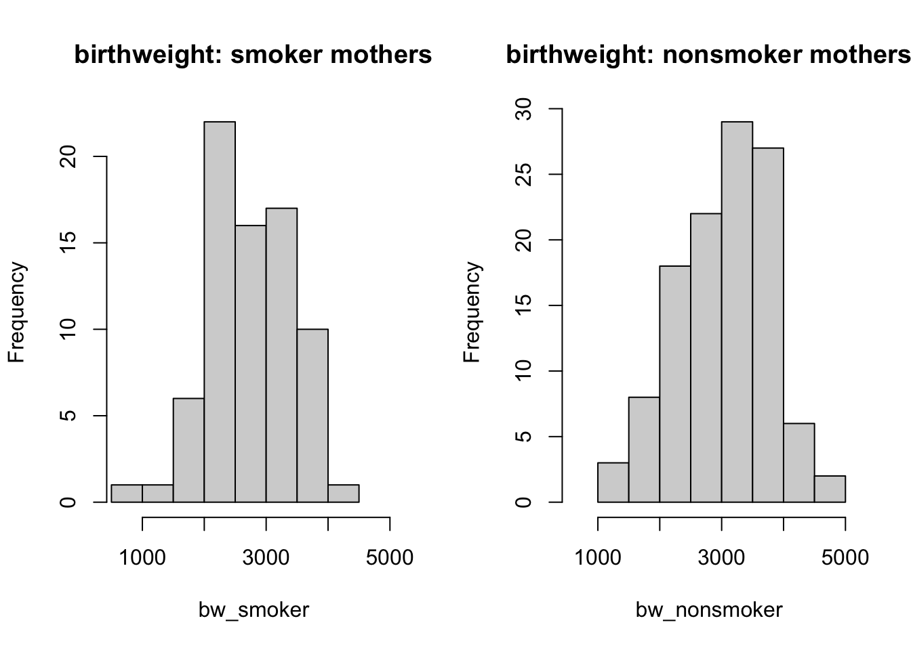
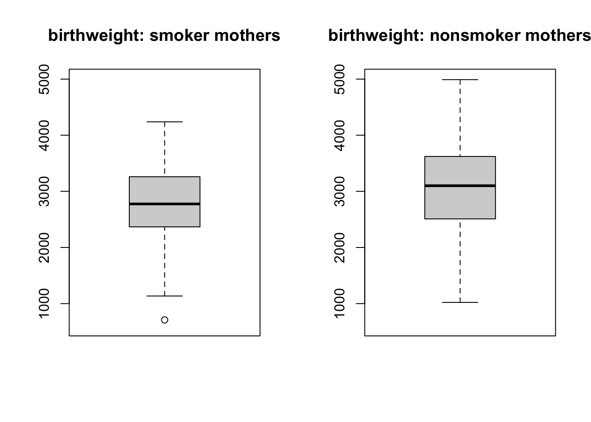
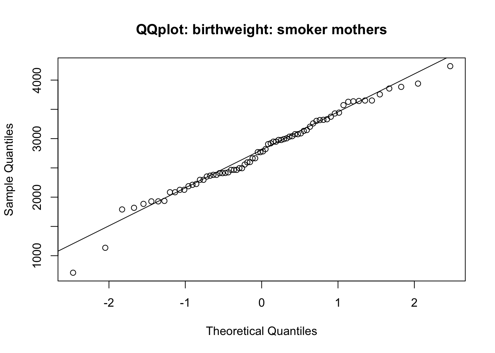
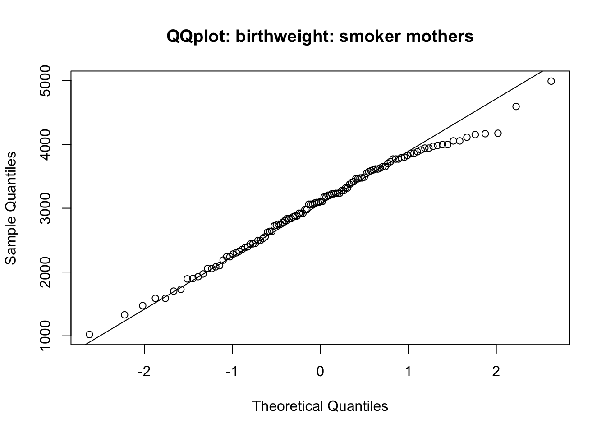
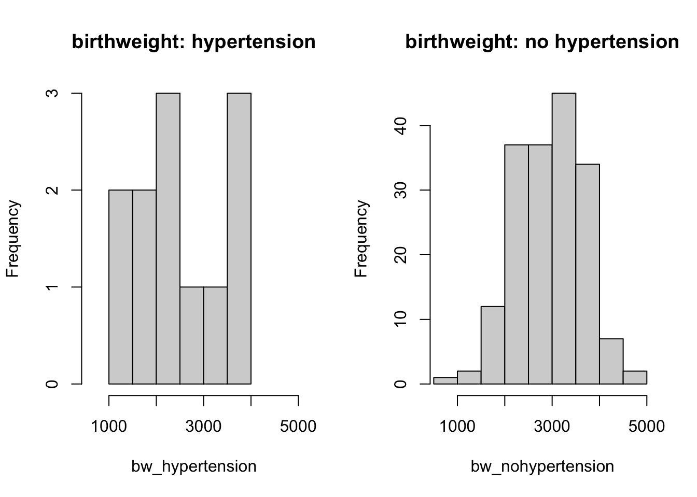
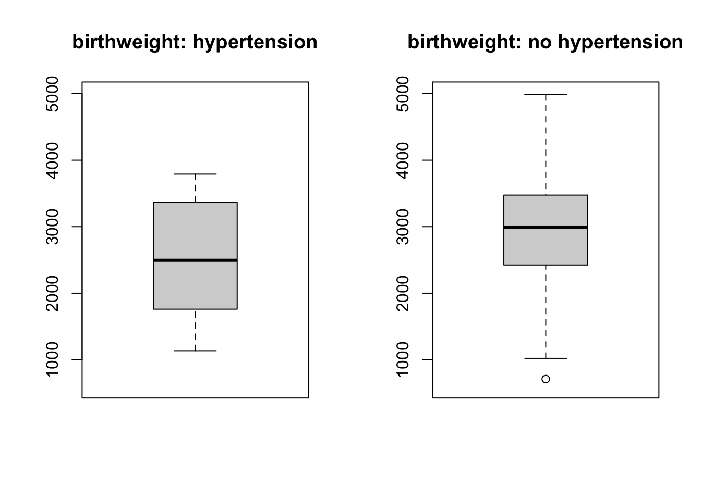
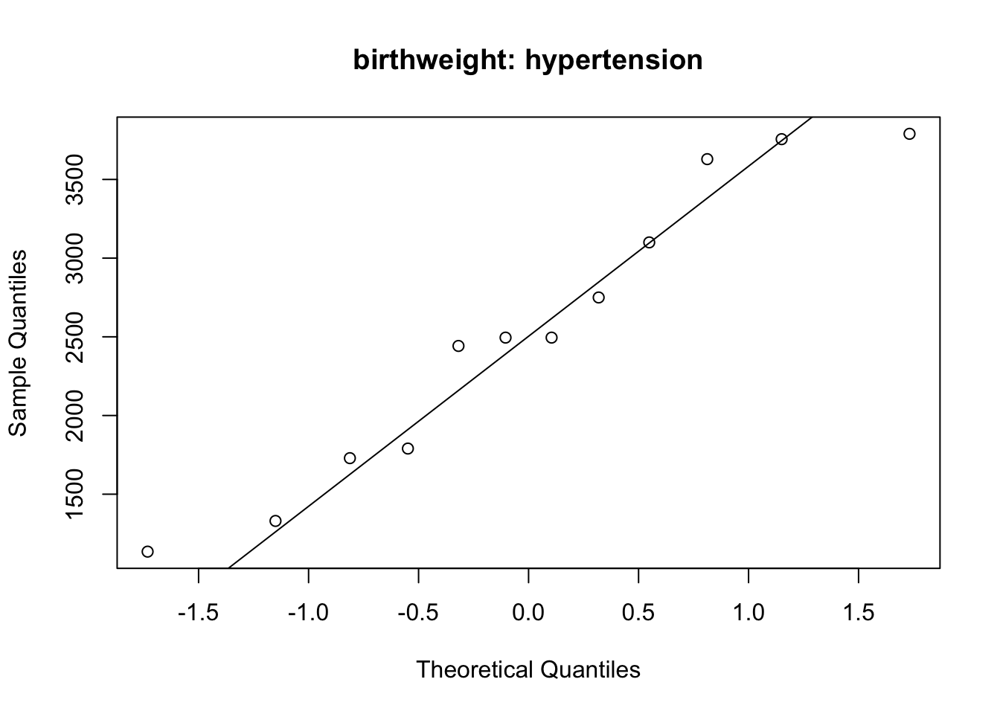
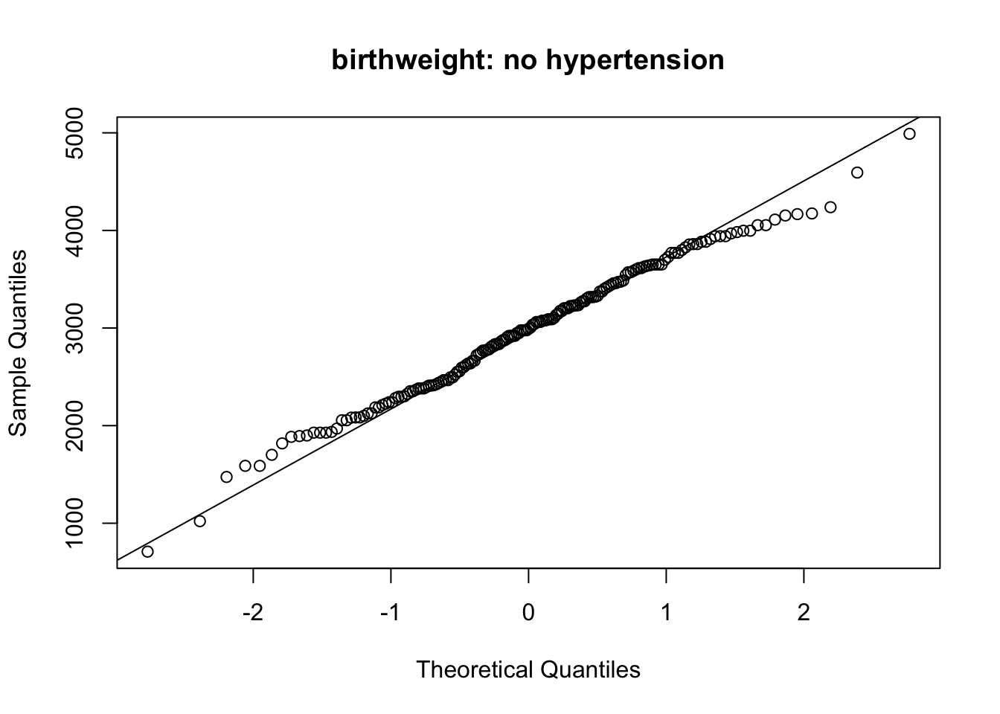

# test proportion: whether 123 success in 1000 equals prob = 0.15
prop.test(x = 123, n = 1000, p = 0.15)
binom.test(x = 123, n = 1000, p = 0.15)
# create binary variable
# compare your continuous values against threshold
# assign "yes" to those higher; otherwise, assign "no"
high_value <- ifelse(your_values > threshold, "yes", "no")
# count each category
table(x) # x is categorical!
# cross tabulation (2 variables)
table(x,y) # x, y are categorical
# chi.squared test
# tb is a 2 by 2 table (matrix) with counts
chisq.test(tb)Categorical data analysis
Proportions, contingency table, chi-square test
Datasets
Short summary
Proportions for one group
Sample proportion \(p = d/n\)
- \(d\) is the number who experience the outcome of interest (e.g. disease)
- \(n\) is the sample size.
95% confidence interval for the population proportion:
\((p - 1.96 \times \sqrt{\frac{p (1-p)}{n}}, p + 1.96 \times \sqrt{\frac{p (1-p)}{n}})\)
Hypothesis test for one proportion (equal to a pre-specified value): z-test
Compare two proportions
Outcome: whether the subjects experience the outcome of interest
Exposure:
- exposed to a risk factor; or treatment group (in clinical trials)
- unexposed to a risk factor; or placebo/control group
Contingency table
| Outcome (yes) | Outcome (no) | Total | |
|---|---|---|---|
| Exposed (group 1) | d1 (d1/n1) | h1 (h1/n1) | n1 |
| Unexposed (group 0) | d0 (d0/n0) | h0 (h0/n0) | n0 |
| Total | d | h | n |
Measures:
- Risk difference: difference of the risks (not commonly used)
- Relative risk (risk ratio): ratio between risks of experiencing the outcome among exposed group, and unexposed group, \(\frac{d1/n1}{d0/n0} = \frac{d1/(d1+h1)}{d0/(d0+h0)}\)
- Odds ratio: ratio between odds of experiencing the outcome, \(\frac{d1/h1}{d0/h0} = \frac{d1 \times h0}{d0 \times h1}\)
Each has a confidence interval (not required to compute from formula).
Strength of association (statistical tests)
Chi-squared test (pronounce: kai)
- Test statistic: \(\chi^2 = \sum_i \frac{(O_i - E_i)^2}{E_i}, d.f. = 1\)
- \(O_i, E_i\): observed and expected values in \(i\)th cell of the table
- Only returns a p-value (and test statistic); you should report effect estimates as well
- Check validity
- overall total more than 40
- or, overall between 20 to 40, and all expected values are at least 5
Exact test (for small dataset)
- Recommended when total less than 20; or smallest cell has expected number less than 5
Chi-square test measures strength of association
Chi-squared test does not distinguish between exposure and outcome variables. If you reverse the variable order, the test-statistic and p-value is exactly the same.
Report risk ratio and/or odds ratio with confidence interval, along with p-value.
Examples (exercises with solution)
Exercise 1 (lung function)
Lung function has been measured on 106 medical students. Peak expiratory flow rate (PEF, measured in liters per minute) was measured three times in a sittinng position, and three times in a standing position.
The variables are
- Age (years)
- Gender (female, male)
- Height (cm)
- Weight (kg)
- PEF measured three times in a sitting position (pefsit1, pefsit2, pefsit3)
- PEF measured three times in a standing position (pefsta1, pefsta2, pefsta3)
- Mean of the three measurements made in a sitting position (pefsitm)
- Mean of the three measurements made in a standing position (pefstam)
- Mean of all six PEF values (pefmean)
1a)
We investigate whether having a high value of pefmean is associated with gender. First, create a new variable highpef that indicates whether pefmean is above 500.
# if you use rda data file:
# load('./data/PEFH98-english.rda')
# if you use csv:
lung_data <- read.csv('data/PEFH98-english.csv', sep = ',')
# head(lung_data)
# examine variable pefmean
# visualise the distribution
hist(lung_data$pefmean)
abline(v = 500, col = 'red', lwd = 2)
There are multiple ways to do it. Here we show two of them.
In option 1, we use the function ifelse(). It will create a binary vector, and fill in different output based on whether the condition was true or not.
# option 1
# code new variable: highpef with cutoff = 500
# this is a binary variable, 1 means yes (higher than 500), 0 means no
highpef <- ifelse(lung_data$pefmean > 500, '1', '0')
# check if it makes sense
head(lung_data$pefmean)[1] 405.0000 491.6667 505.0000 513.3333 725.0000 602.5000head(highpef)[1] "0" "0" "1" "1" "1" "1"In option 2, we create a vector with a pre-specified value, then replace the elements for given indices.
# option 2
# create a vector with all '0's
# then set the elements above 500 in 'pefmean' as '1'
# (replacement with index)
n <- length(lung_data$pefmean) # 106
highpef_alt <- rep('0', n) # repeat '0' 106 times
highpef_alt[lung_data$pefmean > 500] <- '1'
head(highpef_alt)[1] "0" "0" "1" "1" "1" "1"1b)
We investigate the association between these two variables via an appropriate table analysis. Make a table of highpef vs gender, which counts the number of subjects having each one of the four combinations in a 2 by 2 contingency table.
You can do this with table() command: it counts how many observations equals to each unique value in the data. When the data takes 2 values (1/0, yes or no), table() counts the numbers in each category.
# take out gender variable so we don't need to use $ any more
gender <- lung_data$gender
# we can count how many subjects are in each category for the two variables
table(gender)gender
female male
54 52 table(highpef)highpef
0 1
54 51 Using table() for two variables produces the cross tabulation: \(2 \times 2\) combinations. The first element is put as rows, and second element is put as columns.
# now we count how many subjects are in the combinations
table_gender_highpef <- table(gender, highpef)
table_gender_highpef highpef
gender 0 1
female 48 5
male 6 46
Cross tabulation, order of exposure and outcome
You should be aware that table() does not automatically produce the contingency table which puts exposed (group 1) for two outcomes at the first row; neither does it put positive outcome (outcome = yes) for exposed/unexposed group in the first column.
table() only counts the combination. It is up to you to make sense which numbers are \(d1, d0, h1, h0\)!
1c)
Compute risk ratio and odds ratio (only the point estimates, no confidence interval). Here the exposure is gender (we assume that the reference group is female: unexposed), and outcome is highpef. Interpret your results.
Risk ratio and odds ratio
| Outcome (yes) | Outcome (no) | |
|---|---|---|
| Exposed | d1 | h1 |
| Unexposed | d0 | h0 |
Risk ratio: \(\frac{d1/(d1+h1)}{d0/(d0+h0)}\)
Odds ratio: \(\frac{d1/h1}{d0/h0} = \frac{d1 \times h0}{d0 \times h1}\)
It could help by drawing a table before computing the metrics.
Outcome (highpef = 1) |
Outcome (highpef = 0) |
|
|---|---|---|
Exposed (gender = male) |
46 | 6 |
Unexposed (gender = female) |
5 | 48 |
# first use formula (only point estimates)
# risk ratio (relative risk)
# risk in exposed / risk in unexposed
risk_exposed <- 46/(46+6) # 0.885
risk_unexposed <- 5/(5+48) # 0.094
rr <- risk_exposed/risk_unexposed
rr # 9.37[1] 9.376923# odds ratio
# odds of event in exposed group / odds of event in non-exposed group
odds_exposed <- 46/6 # 7.667
odds_unexposed <- 5/48 # 0.104
or <- odds_exposed/odds_unexposed
or # 73.6[1] 73.61d)
Carry out a chi-square analysis to assess the strength of association. Interpret your results.
We do a chi-square test with chisq.test() function. To read more about what is required as input, you can use ?chisq.test() to get the documentation.
# note:
# we have not distinguished between exposure and outcome
# by default, 'table' function puts the first input in rows (gender)
# the order does not affect the result of chi-square test
chisq.test(table_gender_highpef)
Pearson's Chi-squared test with Yates' continuity correction
data: table_gender_highpef
X-squared = 62.498, df = 1, p-value = 2.667e-15If you want to know what are the observed and expected numbers used for the chi-square test, you can create a variable (let us call it ctest), and access the elements using $.
ctest <- chisq.test(table_gender_highpef)
# you can extract elements of ctest using $
ctest$observed # observed data highpef
gender 0 1
female 48 5
male 6 46ctest$expected # expected data (under null, no association) highpef
gender 0 1
female 27.25714 25.74286
male 26.74286 25.25714
Chi-square test measures strength of association
It is worth pointing out that chisq.test() does not distinguish between exposure and outcome variables. If you reverse the variable order, the test-statistic and p-value is exactly the same.
This is why you should always be clear in your mind what is your exposure and outcome, and report risk ratio and/or odds ratio.
# reverse the order of the two variables: highpef firsst, gender second
table_highpef_gender <- table(highpef, gender)
chisq.test(table_highpef_gender)
Pearson's Chi-squared test with Yates' continuity correction
data: table_highpef_gender
X-squared = 62.498, df = 1, p-value = 2.667e-15Optional: use R package to compute RR and OR
(This is for people who are interested, and able to load additional R packages and read the documentations. If this is too much: skip it)
You can verify if this is correct with some R packages that implement risk ratio and odds ratio.
Be careful with the input format when using packages
Different packages can have different requirements for how your data input should look like. Always check documentation to get the correct result.
This is also true with other softwares like STATA.
Comparison of different packages in computing risk ratio: read this discussion
The first function we use is epitab from epitools package.
# install.packages('epitools')
# match the expected data format
# col: outcome -, outcome +
# row: exposure -, exposure +
tb1 <- matrix(c(48, 5, 6, 46), byrow = T, ncol = 2)
# tb1
epitools::epitab(tb1, method = 'riskratio')$tab
Outcome
Predictor Disease1 p0 Disease2 p1 riskratio lower upper
Exposed1 48 0.9056604 5 0.09433962 1.000000 NA NA
Exposed2 6 0.1153846 46 0.88461538 9.376923 4.048485 21.71842
Outcome
Predictor p.value
Exposed1 NA
Exposed2 2.16777e-17
$measure
[1] "wald"
$conf.level
[1] 0.95
$pvalue
[1] "fisher.exact"epitools::epitab(tb1, method = 'oddsratio')$tab
Outcome
Predictor Disease1 p0 Disease2 p1 oddsratio lower upper
Exposed1 48 0.8888889 5 0.09803922 1.0 NA NA
Exposed2 6 0.1111111 46 0.90196078 73.6 21.00627 257.8735
Outcome
Predictor p.value
Exposed1 NA
Exposed2 2.16777e-17
$measure
[1] "wald"
$conf.level
[1] 0.95
$pvalue
[1] "fisher.exact"The second function we use is epi.2by2 from epiR package.
# install.packages('epiR')
# match the expected data format
# col: outcome +, outcome -
# row: exposure +, exposure -
tb2 <- matrix(c(46, 6, 5, 48), byrow = T, ncol = 2)
# tb2
epiR::epi.2by2(tb2, method = 'cohort.count') Outcome + Outcome - Total Inc risk *
Exposed + 46 6 52 88.46 (76.56 to 95.65)
Exposed - 5 48 53 9.43 (3.13 to 20.66)
Total 51 54 105 48.57 (38.70 to 58.53)
Point estimates and 95% CIs:
-------------------------------------------------------------------
Inc risk ratio 9.38 (4.05, 21.72)
Inc odds ratio 73.60 (21.01, 257.87)
Attrib risk in the exposed * 79.03 (67.31, 90.75)
Attrib fraction in the exposed (%) 89.34 (75.30, 95.40)
Attrib risk in the population * 39.14 (26.76, 51.52)
Attrib fraction in the population (%) 80.58 (57.91, 91.04)
-------------------------------------------------------------------
Uncorrected chi2 test that OR = 1: chi2(1) = 65.624 Pr>chi2 = <0.001
Fisher exact test that OR = 1: Pr>chi2 = <0.001
Wald confidence limits
CI: confidence interval
* Outcomes per 100 population units Exercise 2 (birth data)
We shall analyse the data set given in the file birth.dta. In a study in Massachusetts, USA, birth weight was measured for the children of 189 women. The main variable in the study was birth weight, BWT, which is an important indicator of the condition of a newborn child. Low birth weight (below 2500 g) may be a medical risk factor. A major question is whether smoking during pregnancy influences the birth weight. One has also studied whether a number of other factors are related to birth weight, such as hypertension in the mother.
The variables of the study are
- Identification number (ID)
- Low birth weight
- Age of the mother (AGE)
- Weight (in pounds) at last menstruaal period (LWT)
- Ethnicity, 1 means White, 2 means African American, 3 meaans other (ETH)
- Smoking status, 1 means current smoker, 0 means not smoking during pregnancy (SMK)
- History of premature labbour, values 0, 1, 2… (PTL)
- History of hypertension, 1 is yes, 0 is no (HT)
- Uterine irritability, 1 is yes, 0 is no (UI)
- First trimester visits, values 0, 1, 2… (FTV)
- Third trimster visits, values 0, 1, 2… (TTV)
- Birth weight (BWT)
2a)
Does smoking influence the birth weight of a baby?
Make a histogram and a box plot, and find the median and mean for birth weight in grams (bwt) for the two groups of mothers: one group that smokes, and one that does not smoke durinng the pregnancy. (Hint: use variable smk for this task)
# if you are using .rda: click on the data icon
# load data
birth <- read.csv('data/birth.csv', sep = ',')
head(birth) id low age lwt eth smk ptl ht ui fvt ttv bwt
1 4 bwt <= 2500 28 120 other smoker 1 no yes 0 0 709
2 10 bwt <= 2500 29 130 white nonsmoker 0 no yes 2 0 1021
3 11 bwt <= 2500 34 187 black smoker 0 yes no 0 0 1135
4 13 bwt <= 2500 25 105 other nonsmoker 1 yes no 0 0 1330
5 15 bwt <= 2500 25 85 other nonsmoker 0 no yes 0 4 1474
6 16 bwt <= 2500 27 150 other nonsmoker 0 no no 0 5 1588# take the variables
birthweight <- birth$bwt
smoker <- birth$smk
# get to know how many smoker and non-smoker
table(smoker)smoker
nonsmoker smoker
115 74 # histogram for all (both categories together)
hist(birthweight)
# separate birthweight based on smoking
bw_smoker <- birthweight[smoker == 'smoker']
bw_nonsmoker <- birthweight[smoker == 'nonsmoker']
# can produce summary statistics
summary(bw_smoker) Min. 1st Qu. Median Mean 3rd Qu. Max.
709 2370 2776 2773 3246 4238 summary(bw_nonsmoker) Min. 1st Qu. Median Mean 3rd Qu. Max.
1021 2509 3100 3055 3622 4990 Visualise with histogram and boxplot
par(mfrow = c(1, 2))
# histogram for smokers
# (you can try to add sample means for each group)
# set the range for axis limits so they look comparable
hist(bw_smoker, main = 'birthweight: smoker mothers', xlim = c(600, 5000))
hist(bw_nonsmoker, main = 'birthweight: nonsmoker mothers', xlim = c(600, 5000))
# boxplot
boxplot(bw_smoker, main = 'birthweight: smoker mothers', ylim = c(600, 5000))
boxplot(bw_nonsmoker, main = 'birthweight: nonsmoker mothers', ylim = c(600, 5000))
From the histograms and boxplots, you can spot that there seems to be slightly smaller values of baby birth weight for smoker mothers; although we can not draw a concrete conclusion by looking at the graphs. Therefore, you should carry out a hypothesis test to be more certain.
2b)
Are the distributions for the two groups normal? Can we conclude that smoking has an effect on the weight of a newborn? Use a t-test.
qqnorm(bw_smoker, main = 'QQplot: birthweight: smoker mothers')
qqline(bw_smoker)
qqnorm(bw_nonsmoker, main = 'QQplot: birthweight: smoker mothers')
qqline(bw_nonsmoker)
# two samples t-test
t.test(bw_smoker, bw_nonsmoker, paired = F) # welch
Welch Two Sample t-test
data: bw_smoker and bw_nonsmoker
t = -2.7095, df = 170, p-value = 0.00743
alternative hypothesis: true difference in means is not equal to 0
95 percent confidence interval:
-486.95979 -76.46677
sample estimates:
mean of x mean of y
2773.243 3054.957 t.test(bw_smoker, bw_nonsmoker, paired = F, var.equal = T)
Two Sample t-test
data: bw_smoker and bw_nonsmoker
t = -2.6336, df = 187, p-value = 0.009156
alternative hypothesis: true difference in means is not equal to 0
95 percent confidence interval:
-492.73382 -70.69274
sample estimates:
mean of x mean of y
2773.243 3054.957 From the Q-Q plots, you can consider that the normality assumption is fulfilled.
The t-test (either Welch’s two sample t-test; or two sample t-test for equal variances) indicates that there is significant difference between the two groups. Birth weight of babies from smoker mothers are significantly lower than those from non-smoker mothers (p=0.009 if using the second test).
2c)
Do mothers of hypertension have a tendency to have babies with a lower birth weight? (The variable for hypertension is HT)
Make a histogram of birth weight for the two groups of mothers with and without hypertension. What do you observe?
# take out the variables
# head(birth)
hypertension <- birth$ht
# separate birthweight based on hypertension
bw_hypertension <- birthweight[hypertension == 'yes']
bw_nohypertension <- birthweight[hypertension == 'no']
# can produce summary statistics
summary(bw_hypertension) Min. 1st Qu. Median Mean 3rd Qu. Max.
1135 1775 2495 2537 3232 3790 summary(bw_nohypertension) Min. 1st Qu. Median Mean 3rd Qu. Max.
709 2424 2992 2972 3475 4990 par(mfrow = c(1, 2))
# can set an x axis limit so they are comparable
hist(bw_hypertension, main = 'birthweight: hypertension', xlim = c(600, 5000))
hist(bw_nohypertension, main = 'birthweight: no hypertension', xlim = c(600, 5000))
# boxplot
boxplot(bw_hypertension, main = 'birthweight: hypertension', ylim = c(600, 5000))
boxplot(bw_nohypertension, main = 'birthweight: no hypertension', ylim = c(600, 5000))
You can read (from the y-axis of histograms) that baby birth weight for hypertension mother group have very few observations compared to those with no hypertension mothers. This can not be spotted in the boxplot.
This suggests that when you carry out exploratory analysis, it’s always useful to do it in different ways.
# check normality
qqnorm(bw_hypertension, main = 'birthweight: hypertension')
qqline(bw_hypertension)
qqnorm(bw_nohypertension, main = 'birthweight: no hypertension')
qqline(bw_nohypertension)
# can check the standard deviation to see if you need welch or equal variance t-test
c(sd(bw_hypertension), sd(bw_nohypertension))[1] 917.3405 709.2265# two samples t-test
# t.test(bw_hypertension, bw_nohypertension, paired = F) # welch
t.test(bw_hypertension, bw_nohypertension, paired = F, var.equal = T)
Two Sample t-test
data: bw_hypertension and bw_nohypertension
t = -2.0192, df = 187, p-value = 0.04489
alternative hypothesis: true difference in means is not equal to 0
95 percent confidence interval:
-861.09734 -10.02413
sample estimates:
mean of x mean of y
2536.750 2972.311 The data in hypertension group (even though scarce) fall roughly on the straight line in the QQ plot. The data on the no hyper tension group (much more data) also fall on the straight line; this suggests that the normal assumption can be assumed to be fulfilled.
We have checked whether the variances between the two groups are very different (rule of thumb: twice standard deviation). We can see that they do not differ by that much; so we can use the t-test with equal variance.
2d)
Analyse the effect of smoking on birth weight in a table (categorical analysis): compute the relative risk (risk ratio) and carry out a test to assess the strength of association.
Also do it for hypertension (instead of smoking).
What can you conclude?
# smoking on birth weight
# cross tabulation
low_bw <- birth$low
table(low_bw)low_bw
bwt <= 2500 bwt > 2500
59 130 # distinguish case/non case, exposed/unexposed on your own!
tb_bw_smk <- table(smoker, low_bw)
tb_bw_smk low_bw
smoker bwt <= 2500 bwt > 2500
nonsmoker 29 86
smoker 30 44# compute your risk ratio!
chisq.test(tb_bw_smk)
Pearson's Chi-squared test with Yates' continuity correction
data: tb_bw_smk
X-squared = 4.2359, df = 1, p-value = 0.03958Exposure variable is smoker, and outcome is low birth weight of baby.
Risk in exposed group (smoker): 30/(30+44) = 0.405
Risk in unexposed group (nonsmoker): 29/(29+86) = 0.252
Relative risk (risk ratio): 0.405/0.252 = 1.61
With the chi-square test which has a p value of 0.03, you can say that there is evidence that smoking during preganancy affects the risk of low birth weight. (We have not computed the confidence interval here, but you should report them. Use an R package)
(Optional)
The situation for hypertension is slightly tricker.
# hypertension
table(hypertension)hypertension
no yes
177 12 # cross tabulation
# distinguish case/non case, exposed/unexposed on your own!
tb_bw_ht <- table(hypertension, low_bw)
tb_bw_ht low_bw
hypertension bwt <= 2500 bwt > 2500
no 52 125
yes 7 5# compute your risk ratio!Exposure variable is hypertension, and outcome is low birth weight of baby.
Risk in exposed group (hypertension): 7/(7+5) = 0.583
Risk in unexposed group (no hypertension): 52/(52+125) = 0.293
Relative risk (risk ratio): 0.405/0.252 = 1.99
# carry out a chi-square test
chisq.test(tb_bw_ht)Warning in chisq.test(tb_bw_ht): Chi-squared approximation may be incorrect
Pearson's Chi-squared test with Yates' continuity correction
data: tb_bw_ht
X-squared = 3.1431, df = 1, p-value = 0.07625# can specify the computation:
chisq.test(tb_bw_ht, correct = F) # remove the continuity correctionWarning in chisq.test(tb_bw_ht, correct = F): Chi-squared approximation may be
incorrect
Pearson's Chi-squared test
data: tb_bw_ht
X-squared = 4.388, df = 1, p-value = 0.03619chisq.test(tb_bw_ht, simulate.p.value = T) # simulate p values
Pearson's Chi-squared test with simulated p-value (based on 2000
replicates)
data: tb_bw_ht
X-squared = 4.388, df = NA, p-value = 0.05397You can see that the conclusion for this chi-square test is problematic, as the data is very imbalanced. The p-value is around 0.05, so you are not able to reject the null hypothesis (of no association) with full confidence. You should report your confidence interval along with the point estimate, and also report your p-value even if it is not significantly small.
You should also double check with results computed in R packages that have implemented relative risk.